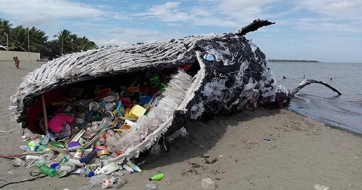

Images


Hey there, let's talk about our big friends in the ocean – whales. These amazing creatures are having a hard time, and it's not just because of natural challenges. Nope, it's us humans and our not-so-great habits, especially when it comes to plastic and oil. First off, picture this: whales swimming around, minding their own business, but then, bam! They run into plastic. Plastic bags, old fishing gear – you name it, it's there. Our oceans have turned into dumping grounds, and it's seriously messing with the whales' lives. They get tangled up, eat stuff they shouldn't, and it's just not good for them or their homes. And then there's the oil problem. Spills and leaks happen, and whales end up swimming through this nasty stuff. It's not just about the immediate harm – it messes up the whole underwater world, throwing everything out of whack. So, here's the deal – whales are in trouble, and it's because of the mess we're making in their homes. This introduction is all about understanding why these magnificent creatures are endangered and how our plastic and oil habits are making things worse. It's time to wake up, take responsibility, and do something about it before it's too late. Let's give our ocean buddies a fighting chance!
Explore more about the issue: